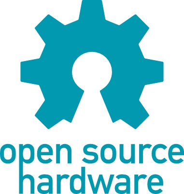

Design with the user
21 November 2013
1. Open Design + Metadesign: concepts and development
2. Intellectual property and design: laws and the design process
1. Open Design + Metadesign: concepts and development
Web 2.0
Source: http://en.wikipedia.org/wiki/You_(Time_Person_of_the_Year)+
http://content.time.com/time/magazine/article/0,9171,1570810,00.html
Web 2.0 + Design

Peer-to-Peer

Peer-to-Peer + Design

Source: http://www.kiva.org/lend/333427
Peer-to-Peer + Design
Intercontinental Ballistic Microfinance from Kiva on Vimeo.
Source: http://vimeo.com/28413747
Crowdsourcing

Source: http://www.innocentive.com/
Crowdsourcing + Design

Source: http://www.crowdspring.com/
Mobile: Single user designing, no collaboration
Source: http://www.mshape.com/
Mobile: Smart Mobs, Ubiquitous Computing
Hybrid models: OpenIDEO

Source: http://www.openideo.com/
Hybrid models: OpenIDEO
Open Source Everywhere
Software is just the beginning … open source is doing for mass innovation what the assembly line did for mass production. Get ready for the era when collaboration replaces the corporation.
Source: Goetz, T. (2003, November). Open Source Everywhere. Wired, 11(11). Retrieved from http://www.wired.com/wired/archive/11.11/opensource.html
Open Drink

Source: http://en.wikipedia.org/wiki/Free_Beer+
http://en.wikipedia.org/wiki/OpenCola_(drink)
Open Biotechnology

Open Hardware Definition

Source: http://freedomdefined.org/OSHW
Open Hardware Definition Logo
Source: http://oshwlogo.com/
Open Source: what is it?
A (software) project published with a license that facilitates its access + modifying + sharing in a collaborative way.
A (software) project developed collaboratively by a community, based not on hierarchy but on reputation.
Open Design: what is it?
A design a project published with a license that facilitates its sharing and that can be “compiled” or “manufactured” locally.
Open Design refers to every kind of design projects that can be shared in a digital format over a network.
Open Design: what is it?
- sharing
- collaboration
- open licenses (?)
- source code --> artifact
Open Design Definition, from 2000

Open Design Working Group

Source: http://design.okfn.org/
Open Design Working Group; Mailing List
Open Design Working Group; Mailing List Archive

Open Design Working Group; Mailing List Archive
Open Design Definition, from 2012 - ...
Source: https://github.com/OpenDesign-WorkingGroup/Open-Design-Definition
2. Intellectual property and design: laws and the design process
Thank you!
Massimo Menichinelli / info@openp2pdesign.org / @openp2pdesign

This work is licensed under a Creative Commons Attribution 3.0 Unported License.
Massimo Menichinelli - 2013
openp2pdesign.org